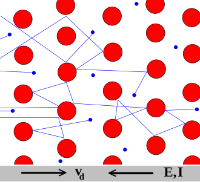
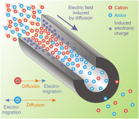

The disciplinarily separated sience defines electricity’s concepts through forces and infinitely small test charge. In living matter, neither is valid in an unchanged form: constraints and physical/chemical additional forces are present, furthermore, the charges of the carriers are not negligible compared to the charges that generate the field acting on the charges. Furthermore, since the carriers have mass, one cannot apply laws of disciplinary electricity since they are valid for ”slow” currents in a different form. One may have fundamental problems with the mathematical descriptions: the discrete nature of charge carriers question marks the differentiability of the corresponding functions, the charge-mass dichotomy of ions the interpretation of partial derivatives, furthermore, the simultaneity of different phenomena.
Charge is one of the fundamental properties of matter, one of the fundamental abstractions in science, and the primary abstraction in connection with electrical concepts. Although charge is an abstract property, it must always have a carrier. Without a carrier, no current and voltage can happen; although the transition between the discrete and continuous views is implicite and tacit. In contrast with classical electricity, significance should be attached to the circles representing the ion and electron, in the sense of implying a relative size and mass. In a useful first construct, they are hard-sphere objects. The most important opening idea, electrically, is that they have a property called ”charge” which is the same size, but opposite in polarity for the ion and the electron and the ions can have multiple charge. The ions are about times heavier and about the same factor larger than electrons, and this difference leads to crucial other differences, for example in their speed and conduction mechanism. For the sake of simplicity, we always think about positive ions, although we know also there are negative ions. An essential implication is that an ion and an electron will strongly attract each other, while two positive ions or two electrons would strongly repel each other. All charges observed in nature are multiples of these elementary charges. The charge generates an electric field, its spatial integral results in potential difference or voltage, and its movement (its time derivative) generates a current (furthermore, electromagnetic waves that we do not discuss here).
One of the fundamental symmetries of nature is the conservation of electric charge; it is valid, of course, for living matter as well. No known physical process produces a net change in electric charge. Claims such as ”the current cannot disappear, it has to go somewhere” [26], page 9, are wrong. On the one side only charge conserves, its time derivative, the current, does not. On the other, charge conserves only globally, but not locally: the charge moves from one place to another with a finite speed. The case is similar to the case of general relativity, and also its reason is the same: the finite speed of interaction. In the general theory of relativity, local and global energies had to be introduced; for its mathematical handling, see, also Noether’s theorem. In the case of biology, the speed of interaction is the conduction velocity. It is a limiting speed in the sense as the concept is used in the theories of relativity: in biology, no effect can be faster than the (actual) conduction speed. Further complication arise from bioelectricity and neurotransmitters. They, apparently, ”produce” new charges in a biological matter.
In no case can one think that ions in living matter behave as electrons in metallic conductors. Although biology does not say so explicitly, implicitly it says so by using the equations describing electrons in solids. Using the fundamental laws of electricity without changes means assuming that the ions travel at the same speed in electrolytes as electrons in metal conductors, surely misleading researchers (by introducing ’delayed current’, ’delayed ion channels’, and similar obscure notions). One must be especially careful that the electric testing circuits are hybrid: in half of the circuit, the charge carriers are electrons, while in the other half, they are ions. There are two points where the charge carriers must be converted there and back, with all potential, speed and timing issues. The media and the charge carriers in those two halves are entirely different.
A charge generates an electric field. In the continuous view, physics uses the approximation that some electrical fluid coates surfaces and generates a field. However, in classical electricity, it is a static view which assumes instant interaction. That is, surfaces are equipotential and the charges are fixed to a position somehow. In the particle view, there are no laws of motion: the charges have no carriers. Another discipline, classical mechanics, deals with the mass of the carrier and enables to consider the motion of the charged particles. The main interest of the physical electricity simplified the things by assuming a great degree of collectivism of electrons, that is, that they form an electron cloud. In a solid, electrons move as if they had no mass (they immediately go to the right place in the electric field acting on them). Although the drift speed of electrons is low, the charge transmission mechanism creates the illusion that their interaction with the external fields is ”instant”, that is, their apparent speed is infinitely large. In living matter, sometimes there are no free charge carriers in the medium in question. For example, the attraction of the ions on the opposite surface of the membrane keeps them in place, and extra ions must arrive into the volume to have freely moving charge carriers (which can produce local field and forward potential).
An isolated single charge can be called an ”electric monopole”. Equal positive and negative charges placed close to each other constitute an electric dipole; solved salts in biological liquids typically represent dipoles. From some point, they have a fraction of a unit charge. From our point, it is important that the dipoles are directed. Their orientation can be affected by external fields, furthermore the nearby dipoles affect each other’s field and dipole moment.
It is a common fallacy in physiology that the applied potential generates a current. Instead, even in invasive measurements, its gradient () has the effect, where is the distance, for example, between the clamping point and the membrane or the AIS. Inside the cells, there are no batteries. Instead, the different ion concentrations produce electric gradient () that forms the driving force for moving the ions, among others, through the AIS.
It is worth to recall some features of voltage. Classical electricity applies a hybrid approach, again. In classical circuits, the voltage arrives instantly, but in the discrete elements, such as condensers and solenoids, have a mathematically described time course. We must extend the notion of electric field by considering the contribution of a pseudo-electric field arising from thermodynamics.
For a biological interpretation, we can start from the picture used in the case of condensers: charges arrive into a discrete element with a macroscopic feature (called capacity) of that discrete object of the electric circuit. We assume that a driving force exists across the two ends of the condenser. In physical electricity, the ideal condenser is point-like and a voltage generator provides the voltage switched on the device. Given that it is sizeless and the interaction is instant, the derivative cannot be interpreted within the condenser. In that abstraction, the electric field is a step-like function, see, for example, Fig. 2.11.
In biology, the objects are extended and the charge carriers are slow ions, so we can ask how the voltage gradient (and ) changes across biological objects. Here, again, comes into the picture the different charge propagation mechanism. As we discuss in section 2.3.5, the electric and thermodynamic interaction speeds are very different, and the ions have the attributes mass and charge simultaneously, the potential of the charge can travel only with the speed of the slow ions, so the transport equations such as Eq. (2.9) have a wrong theoretical foundation; consequently they need context-dependent half-empirical coefficients.
In biology, thermodynamical processes produce the voltage and it has a time course. Believing that an equivalent battery provides a constant voltage results in attributing changing conductance to the membrane, as we discuss in section 2.4.2.
It is important, that a voltage can be generated either by driving a current through a solid (in the continuous view) or placing charges in different points (in the discrete view). Electricity explains that voltage can be measured without or with electric current; having entirely different physical background. Accumulating charge on an insulator results in producing an electrostatic field. Of course, while charging, a current flows and energy is needed to produce a voltage, but it is a one-time action; the created potential difference persists. In a condenser, a counterforce counterbalances the attraction between opposite charges on the opposite plates, no charge movement takes place, and no energy is needed to keep up the voltage. Another possibility is when the charge moves (either an electron of the ’free electron cloud’ moves against the friction of a solid or an ion moves with the Stokes-Einstein speed against viscosity) in a medium, see Fig. 2.2. Notice the difference the thermodynamic feature of charge carriers means: only an elecric field can move the electrons, while thermodynamic force can also move the ions. Anyhow, if moving charge carriers against resistance, it produces a voltage difference. In these latter cases, a current (charge transfer) and potential difference can be observed across the considered space region (a solid conductor or an ion channel). See the case of AIS, where a combination of mechanic pressure, thermodynamic and electrical force field moves the ions and creates a voltage measured as AP.) The important difference between producing a voltage difference by charge-up and flowing current is that charge-up is a one-time action, when setting up a voltage difference; while generating a current to keep up the voltage requieres continuous energy investment. Biology typically uses only the continuous view.
It is a common fallacy in physiology that the applied potential generates a current. Hovever, it is a kind of potential energy. Instead, its gradient () has an effect, where is the distance. The field exerts force on a charge carrier in the respective space region. For example, between the clamping point and the membrane or the AIS the force field exists, but the current cannot start until charge carriers appear in the axon. It is important to distinguish potential and the difference of potentials in two different points. The latter, together with the distance of the points, leads to a gradient.
By saying that charge generates potential and having in mind that the charge carriers have a finite speed, one must conclude that the potential in biological matter can be the function of time in volumes and surfaces when charge relocates due to different processes. It differs from the case of physical electricity where the instant interaction means that the changes reach the different parts of the volume or the surface. In the case of living matter, internal processes change continuously the mass and charge disctribution: no uniform bulk concentration and uniform mebrane potential exists. The continuous change is required for life.
Charge and current are the same thing in discrete and continuous views, respectively. Physics interprets current that charge carriers traverse between to distant spatial points, this way naturally implying a charge transmission (conduction) mechanism. In the macroscopic world, we describe the current as the statistical time course of charge carriers carrying charge through a cross section . Technical electricity handles current as an infinitely thin electrical fuild. At any point and at any time, the incoming charge equals the outgoing charge. Kirchoff’s law expresses charge conservation at any point, in a differential form. The correct definition of current is a differential one: , as given for physiology by Appendix A.3.4 in [2]. By using this definition, A.3.5 correctly defines that ”Ohm’s law states that the ratio of voltage to current is a constant: ”. So is its reciprocal, the conductance. By measuring simultaneously the two charge-related secondary entities, one can derive the ternary quantity ”resistance”, the opposition of material to current; an attribute of the medium where the measurement is caried out, instead of being a charge-related feature. Recall that the definition of the current is given at a cross section (i.e., an infinitely thin volume element), and it is valid along the current’s path only if the current is the same across the volume. If the speed of the charge is finite, a temporal difference belongs to the entrance and exit points of the charge.
The other way round, as given by Eq. (1.4) in [26], is wrong. ”It is straightforward to describe the dynamics of this circuit by applying Kirchoff’s current law, which states that the sum of all currents flowing into or out of any electrical node must be zero (the current cannot disappear, it has to go somewhere).” [26] It is straightforward, but, unfortunately, it is not true. The sentence is true only in the picture of ’instant interaction’, which is not the case for ions in electrolytes. Kirchoff’s law expresses charge conservation in a simplified form, and only in the case of ’instant interaction’ (the corresponding speeds differ by six orders of magnitude). The charge, instead of current, cannot disappear (and cannot newly appear either), it has to go somewhere. There is no conservation law for the time derivative of the charge, only for the charge itself. Mismatching charge and its derivative misguides understanding neurophysical phenomena. The non-differential definition contradicts charge conservation and also, contradicts itself: the charge carriers are ions rather than electrons. The current can be interpreted in an integral form as current conservation only if the electric interaction is instant, the discrete components are point-like, and the measured system is closed (or complete). The integral form is an approximation, (more or less) valid for classical physics, but surely not valid for biology. The charges can temporarily disappear (they can be stored, delayed, say on the membrane of axon or exit to a non-measured segment in the system) or ”created” (enter from a non-measured segment, say, through ion channels) or be distributed within the ”wire” such as on the surface of the dendritic tree. The situation is apparently similar to the cases of charges in inductive, capacitive, etc. currents in technical electricity. The significant difference is that in the technical electricity the sum of the charges in the different currents is constant, in biology it is not known where are the charges in a delayed current.
Ions differ from electrons we used to in physical electricity in many features. Their conduction mechanisms are entirely different, and they are not necessarily present in the discussed medium (say, when the medium is surrounded by a charged surface, the field moves free ions out of the volume). They may be produced by biological mechanisms, and they are slow (have a couple of speed, creating the illusion of ’delayed current’). Figure 2.2 illustrates how classical electronics and biology considers charges and their moving. Both disciplines provide an atomic level description, but unfortunately they use the same words for their concepts, although their meaning can be entirely different.
| Solid state | Ion channel |
|---|---|
 |
 |
| Current conveyed by electrons in solids | Current conveyed by ions in ion channel |
| Ohm’s law | [75] |
In solids, as the Drude model describes, electrons (shown in the figure in blue) constantly bounce among heavier, stationary crystal ions (shown in red), that make up the structure of the material. With each collision, though, the electron is deflected in a random direction with a speed that is much larger than the speed gained by the electric field. The net result is that electrons take a zigzag path due to the collisions, but generally drift in a direction along the electric field. Important, that the collisions are inelastic, so the electrons lose (most of) their energy. The solid’s gridpoints absorb the energy, which later is released in form of heat. The process is irreversible.
In biological matter, ions convey electricity. So called ion channels are used for the transfer. Here diffusion and electromigration takes place, by orders of magnitude different speeds. The process is mostly reversible. See also section 2.8.5 and Equ.(2.35). Fig. 2.2 shows that resistance is interpreted as the interaction of charge carriers with the particles in the material that are transported by a driving force (that can comprise also a force of chemical origin). In solid state, the volume considered is ”infinitely large” (that is, the field is homogeneous and the propagation is isotropic), and the charge carriers are uniform that is only one type of interaction is present. In biological objects, the volume is more or less limited (is finite), there may be charged objects present that make the propagation non-isotropic. Furthermore, the charge carriers are non-uniform that introduces thermodynamic interaction in addition to the electrical interaction. Ions, under the electrical/thermodynamic field (and maybe mechanical constraints) accelerate to the Stokes-Einstein speed (see Eq.(2.30)), move against a friction in the electrolyte. The ions suffer (essentially elastic) collisions with neutral molecules and transfer their momentum (and so: energy) to them. From the point of view of ions, the process is energy loss and momentum loss. From the point of neutral molecules, the process is energy gain and momentum gain. In a free space, the energy and momentum quickly distribute in the entire volume, so the process in finally irreversible.
If the acceleration occurs in a narrow tube such as an ion channel, the wall prevents gaining momentum in the direction perpendicular to the direction of acceleration. Given that the collisions are elastic, no energy dissipates; so, in principle, the process is reversible. Strangely enough, this way the electrical force accelerates also the neutral molecules; furthermore, their momentum (using an elastic membrane) can fully contribute to the operation of neuron (forms the AP).
In a narrow tube (such as an ion channel) the momentum exchange is limited to one direction. If the ions are accelerated through the channel, due to the frequent collisions, they can entirely transfer their energy to a large number of neutral molecules. Those accelerated molecules having the same speed may represent a significant ”impact force”, sufficient to cause significant mechanical changes throughout biological systems. The momentum transfer by collisions is a two-way process, it is reversible also in the practice. If a small amount of ionized particles is present in the tube, under an external electrical field, the charged particles can accelerate the neutral ones. Vice versa, if the bulk of the particles are moved mechanically (say, when an ultrasound wave presses the neuron or a rush-in process transfers electric energy to the membrane), the one-directionally moving neutral molecules transfer momentum to the charged particles, this way producing measurable electrical waves (such as an AP).
The secondary electric quantities can be derived from the primary quantity: the bulk of the undissociated molecules ’resist’ transferring ions under the effect of an electric field (the liquid must be pressed through the tube). One can measure potential and current along the ion channel (and so, to calculate resistance), but the behavior of the resistance/conductance is drastically different. One has a pneumatic system instead of a voltage generator and the resistance originates in viscosity. Most of the energy is converted to mechanical energy instead of heat, making the process (mostly) reversible. The AP initially produces an impulse force that compresses the membrane. The compressed membrane, while performing a damped oscillation, pushes and pulls the incompressible electrolyte that contains a small amount of dissociated ions, this way (per defitionem) creating an observable current and voltage wave. In the positive and negative half periods of the elastic oscillation, due to opposite elastic/pneumatic forces, the current and voltage change their sign. Given that the charges move at their Stokes-Einstein speed, the voltage-, current- and pressure waves are synchronized, as observed. The different experimental observations measure the same effect by using their disciplinary measuring devices. The energy of the ions cannot dissipate; instead, the neutral and charged particles share it, and convert between kinetic and elastic energies (the electric energy is much smaller). That is, the neuron can produce heat in the positive phase of the elastic oscillation (the electrolyte is compressed), and can reabsorb heat in the negative phase (decompression), in full accordance with the correctly interpreted laws of physics. This way, by introducing the correct interpretation of ”resistance” for electrolytes, the seven-decades-old contradiction [66] between the electrical and thermodynamic observations are finally resolved, furthermore, the conflicting theories can be naturally unified.
Voltage and current, the secondary electric quantities, derive directly from charge, the primary quantity, and (except time) no external quantity is used. In contrast, when deriving resistance or conductance, one measures how the tested object relates to electricity. At this point comes to light the meaning of E. Schrödinger’s warning about how do we test in physics laboratories. Although physics knows (based on their electric behavior) conductors, insulators and semiconductors, the characteristics of the material under testing is never mismatched into electrical terms. Paper [116] discusses why introducing a fundamental circuit element (the memristor) led to decades-long confusion, when attempting to introduce new laws of electicity. Introducing neuron (in the form of equivalent circuits where the ”living matter” changes its electrical characteristics without any causality), that changes the rules of the game in electricity, has led to similar confusion. Physics provides examples when the relation of voltage and current seems to change and deviate from the Ohmic case. However, energy and the charge conserves (instead of current as [26], page 9, claimed), so we could introduce capacitive and inductive current, capacitive and inductive energy.
When those secondary entities interact with some macroscopic material, their relation to that material defines a feature, such as dielectricity or resistance. Those ternary entities manifest (i.e., are measurable) only when charge is present. Experience shows that, in the presence of electric potential, different media show different resistance against transferring charges, so we define resistance/conductance as one of the media’s macroscopic features (which is connected to microscopic features by Stokes’s Law). There are, however, further crucial differences between the current propagation’s mechanisms in solids and in biological materials.
Due to the charge transmission mechanism, the charge carriers form ”instantly” a field inside the solid. However, it is known that the propagation speed is finite: it takes about to propagate to a distance, forcing the designers of electronic circuits to introduce ”clock domains”, ”clock distribution tree” and so on, when the accurate timing of signals is of importance. In the case of electrolytes, the charge carriers are ions with 50,000 times higher mass and a million times lower propagation speed, so the timing requirements are even more critical. In living structures, in closed volume segments, local electrical fields (typically of biological/chemical/enzymatical origin) may be present, so no freely moving charge carriers can be present in the volume and the permanently present electric field may change the phenomena drastically: the current may appear with a delay with respect to what is expected having ”fast” charge carriers in mind (and their behavior in the laws). Furthermore, biologically active structures may ”produce” charge carriers inside. As a consequence, when deriving ternary quantities from those secondary quantities, we may use non-matching quantity pairs (measured at different times), that produces wrong (unphysical) conclusions. The fundamental laws of electricity are the same, but describing electrical processes of living matter with internal processes inside need more care than in the case of non-living matter without such processes.
When measuring resistance by dividing the measured values of voltage and current, a quantity of dimension resistance or conductance can be derived. Measuring those two charge-related characteristics requires performing two independent measurements, using two independent measuring devices; furthermore, assuring that one uses matching values (measured simultaneously) for the calculation. This is why, for comfort, resistance/conductance measuring devices have been developed and are in use. Of course, even that instrument (see Fig. 2.3) cannot measure directly the ratio of those two secondary quantities, it makes (a little and forgivable) cheating. It reduces the measurement to measuring current by applying a little voltage (of known value) to the device under test, and displays the calculated result in units of resistance/conductance. The device uses the differential form of deriving the current: measures the voltage and the current at the same time. Here comes into play the cheating: instead of actually measuring the voltage, the device uses voltage measured earlier and current value measured at the time of measurement. In the case of ’instant interaction’, the two measurements are simultaneous. The procedure is anyhow an invasion into the circuit, but (when used with care and knowing how the device works) perfect for performing a simplified and bequem measurement. When implemented with modern technology, in most cases the unwanted offset does not have significant effect. However, in biology, the ’service current’ needed for the measurement is in the range of the currents due to biological effects, and can bias measured values.
Two more kinds of issues come to the light when measuring in biological circuits. As we mentioned, although the measurement device works with electrons and in the half with ’instant interaction’, the current keeps the timing of the slow current in the biological time; that is, one uses a ’delayed current’ value in measuring the resistance. This is why good physiology textbooks (such as [2]) emphasize that resistance/conductance is a ’steady-state’ characteristics. Forgetting this fundamental feature results in more or less distorted values; an extreme example is ’demonstrating’ that the neuron is a low-pass filter, see section 4.10.
Another issue is that the device of course cannot distinguish what the experimenter wants to measure and cannot separate its own current that its required voltage produces from the current that the tested object autonomously generates. It works with ’instant’ electricity, using Ohm’s law, and divides the momentary value of the measured current with the known value of the generating voltage. In the case of technical electricity, the current instantly follows its driving force. In biology, however, the charge carriers are slow (at least in the biological half of the circuit), so it needs time until the effect of the voltage change gets observable. In the case of changing gradients, the conductance meter uses non-matching pairs of voltage and current data: the device is designed for measuring in a ’steady-state’. The gradient and its effect are shifted by the time period that the charge carrier needs to travel from the place of its ”excitation” to the place of the measurement. It is in the order of nanoseconds in technical circuits and it can be in the order of fragments of milliseconds, depending on the speed of the ions (depends on the gradient) and the distance traveled, in biological matter. So, the measured conductance is surely wrong, the question is only how much it is wrong.
Notice that the middle figure in Fig. 1.7 shows two essential potential gradient contributions. Given that for the current
or, in another form
That is, when one measures using voltage clamp (see Fig. 2.6), the price paid for fixing the voltage is adding the feedback current to the measured current, and calculate the conductance from a wrong value pair. Apparently, the conductance increases as the ’foreign’ current (that is compensated by the feedback) increases, creating the illusion that ”the conductance changes”. The conductance does not change, it is the effect of the used current feedback, needed to keep the voltage constant against neuronal operation.
In technical electricity, capacity means that charge is accumulated in a discrete circuit element. Experience shows that the voltage measurable on the element is proportional to the stored charge. The factor of proportionality is called capacity.
Actually, the charge disappears from the wires, so the capacity comprises a static and a dynamic component: part of the charge remains permanently in the element, part of it just is travelling on the surfaces of its plates, between the junctions of the wires to the capacitor. As we discussed, in the engineering the current is instant, so the dynamic component is practically missing: the charge instantly arrives from the beginning junction to the end, while it is accumulated in its two extended pieces of wire, as discussed in section 2.5.5.
The slow ions also cause deviations in charge storing. In biology, the circuit elements are extended and it takes time until they appear on its output. The biological condenser stores the charge also in the form that the charge carriers travel on its surface. Given that the rush-in mechanism means that the ions appear ”instantly” on the condenser’s surface through the ion channels in its wall, and they must travel from their ”place of creation” to the AIS, the capacity of the condenser changes when a current flows.